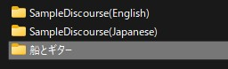
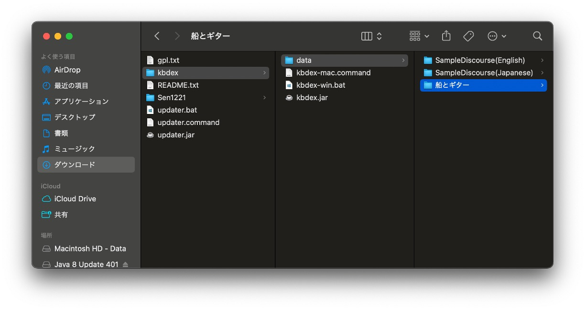

5. 分析データの準備
5.1. 対話データの構造
KBDeXでは，発話順番，発話者，発話内容の情報を含む対話データを読み込み，知識構築の対話として分析できます（1. はじめにも参照）．ここでは，サンプルデータを例に，対話データの構造について説明します．
サンプルデータを図5-1に示します．Idは発話順番，Authorは発話者，Textは発話内容を表します．会話順番が交わされるごとに対話データが長くなることが分かります．なお，サンプルデータではGroupとTimeという列が追加されていますが，マニュアルでは割愛します（その他の機能については8.4. その他のボタンを参照してください）．

図5-1 サンプルデータ
5.2. 対話データの準備
ここでは，サンプルデータを例に，KBDeXで対話データを読み込む準備について説明します．
はじめに，分析する対話データを用意します．ELANやその他のツールを使って対話を文字起こしした場合，KBDeXで扱える対話データの構造に変換する必要があります（参照：5.1. 対話データの構造）．対話データはCSV形式で作成し，「data.csv」というファイル名にしてください．
「kbdex」フォルダ内「データ」フォルダに任意のフォルダ を作成し，「data.csv」を配置します．今回は「船とギター」というフォルダを作成し，サンプルデータを保存します（図5-2，5-3）．これで，対話データをKBDeXで分析する準備が整いました．
{kind=link}
図5-2 対話データを保存するフォルダ（Windows）
{kind=link}
図5-3 対話データを保存するフォルダ（Mac）
5.3. 対話データの整形
対話データを整形することで，分析の妥当性を向上させることができます．データの整形では，主に「記述のゆらぎ」と「指示語」を修正します．サンプルデータを例に，対話データを整形してみましょう．
「記述のゆらぎ」とは，文字起こしの過程で，同じ意味を持つ単語を異なる表記によって記述することを指します．たとえば，サンプルデータでは，「アイディア」と「アイデア」，「クルーズ」と「船旅」，「たしかに」と「確かに」といった記述のゆらぎが確認できます．
記述のゆらぎを整形する過程では，類似する単語によって異なる意味を表現している場合に注意が必要です．たとえば，サンプルデータでは「クルーズ船」と「船」という2つの単語が混在していますが，「クルーズ船」を略して「船」と発話しているケースと，より広範な意味を持たせて「船」と発話しているケースがあります ．同様に，「旅」という単語についても，「クルーズ」や「船旅」を略した単語なのか，より一般化した単語なのかについて，十分検討する必要があるでしょう．
「指示語」の整形では，「それ」や「この」といった指示語を，指示内容で置き換えます．指示語の整形においても，単語のニュアンスや文脈を十分考慮することが重要です．たとえば，あいづちに指示語が含まれる場合がありますが，必ずしも整形する必要はありません．指示語を置換することで，発話内容が発話者の意図を超えてしまう可能性があるからです．
整形したサンプルデータを「サンプルデータ_クレンジング例.csv」として配布していますので，こちらもご覧ください（4. サンプルデータについて）．